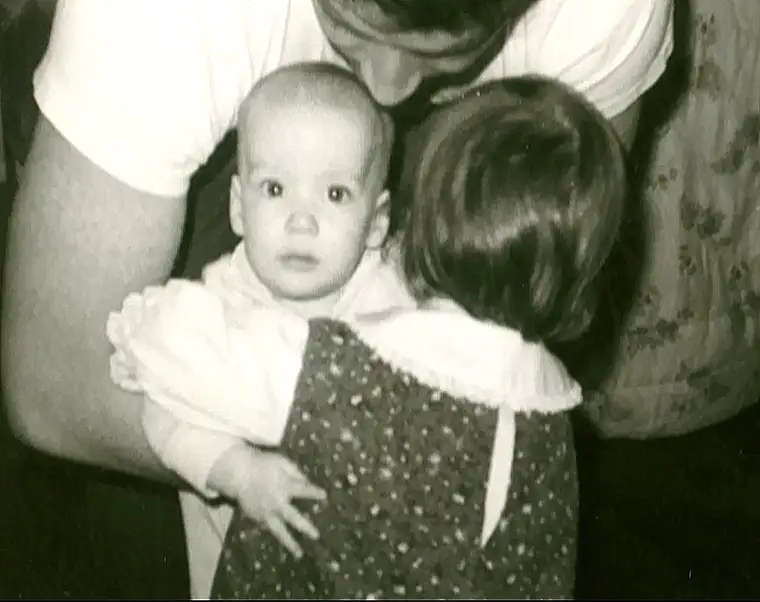
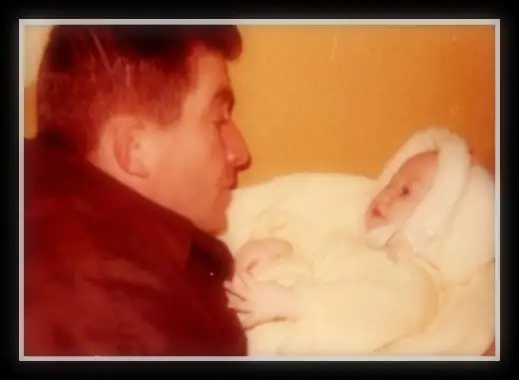

The night of my father’s death was one I flashed back to a couple years ago at an insight my spiritual director delivered. He said that every moment is holy, because God made every moment. We just don’t always see it as it is.
But every so often, we get a glimpse. For me, it was that night that I glimpsed the holy long and hard; that this reality actually felt palpable; that time moved in a way that assured we were experiencing something extraordinary, even as the life within our dear one, our Dad, waned.
When I think back to everything that could have prevented me from being there, I am stunned to think how God provided, how he took care of all the details. And when wise people remind me that everything God allows, he allows for the good, even in suffering, I have that night as a reminder.
Jan. 10, 2011. I play it over again in my mind. “I’m trying to decide if I’m going to go home for the night,” my sister said. “Please don’t go,” I said. “Are you sure you don’t want more time with him alone? I’ve had that time.” “No,” I replied. “I’ve gotten that today. I’d rather you stay. I think you should stay.”
She began settling into the chair opposite my own fold-out, proceeding to create a makeshift resting spot at the end of dad’s bed, in the corner. Not long before, she’d had her long chat with Dad. The nurse had prompted it. Noticing a change in Dad’s breathing, she’d asked us, “Has anyone said goodbye, told him it’s okay to go?” No, not that we knew of. How does one say goodbye? How can one find those words within them when they know what it gives permission to do? To leave this world forever? How can one find the courage to speak these parting sentiments?
I used to think it shouldn’t be that hard to just say it, but now that it was here, and we were the ones faced with the task, I couldn’t figure out how. Camille, however, felt she might have something to offer, so I left them alone for a time, trusting this, too, was how it was supposed to be.
When she summoned me that she’d said all she could, that’s when we made our evening “nests,” turned down the lights and prepared to get some sleep. In the dark, we could hear every labored breath. Instinctively almost, we sang the “goodnight song” we’d made up as little girls, those years when we shared a basement bedroom in our home on the East End of town. It was a special song that stayed mostly in our hearts, a secret song between sisters. It felt sweet. It felt holy. It felt like love. We knew…we had each other. We knew…this could get hard. We knew…we could do it, and God would be with us.
But we were tired, so we did try to rest. I can’t recall how long it was exactly — maybe 30 minutes, more or less. The sound, the movement, from Dad’s bed startled us. There was something different; a change, a readying. Dad was close. Abruptly, we jumped up and drew near him. Was this it, or another false alarm? He couldn’t hang on much longer, we knew that much. It was time to call Mom, and we did.
Mom took her time — at least it seemed so to us. I’ve thought about that many times, how it seemed so belabored that I couldn’t help but wonder if something had happened to her on the way to the hospital. Or maybe she’d lagged on purpose, ready for us to take over, to release the drain of all the caregiving and let her daughters pick up where she’d left off. Maybe.
No matter, somehow, it seemed, this was the order of things in God’s plan, for Mom wasn’t with us in those final moments. It was I at the helm, holding his hand, and my sister holding me; we were all connected there in the room where our dad prepared for flight.

I wanted to offer something. I knew his love for his mother was great, and that the time between since he’d last seen her and now had stretched on far too long. He was only 19 then…
And so I said what made sense. “You’ll get to see your Mom soon!” I wanted to give him hope, something to look forward to. What else did we say? What were our movements? The details are foggy, but I remember the final instance, when the tear formed in his eyes, and the haunting, holy feeling that nearly took my own breath away. It was so tender, yet so jolting. This was it. This was goodbye. I felt as if he were being led by angels somehow. Free. He’d be free soon now. But how hard it was to let go, to know, this would be it. No one can prepare you.
But Dad was ready. Thirty-five years away from God, and Dad had found his way back to the Church not that many years earlier. Like the Thief on the Cross, he’d returned, in a bruised, beaten body, yes, but offering his soul; a spirit that, in time, was renewed by the sacraments. Dad was ready. His priest, his last Confessor, assured us of this at his funeral a few days later. Could there be any greater gift than this?
My Dad’s death, and being there with my only sister, was one of the hardest things I’ve experienced, yet also one of the privileges of my life. In it, I became acutely aware of being in the material world while the spiritual realm surrounded, and of the thinned veil which connects us all and would separate our father from us for a time, but not that long, after all.
And I became keenly aware of love — the love he had for us, and we had for him, and that God had for us all.
By our accounts, it was a holy death. Because, as my spiritual director has said, every moment is holy, since God made every moment, infusing it with the divine. In those hours with dad, in his room in the near dark, it became abundantly clear that God holds us in place each moment, and that he loves us enough to give us glimpses of the holy, if we’ll only notice.
My father’s death made me notice, made me pay attention, made me “see.”
On Dec. 4, 2019, my sister’s first grandchild was born. We didn’t know his name beforehand, so when I read the text announcing his birth and what they would call this precious little boy, I danced for joy. “Robert,” my father’s name, would be forever placed in the middle of his name and his sweet life, reminding us of Dad’s love and how we are all tied together in it.
Dear Dad, I miss your hugs, and that large laugh which often came served with a side of sarcasm. I miss your clever, creative rhymes and writing, the way you loved your grandkids, and the sensitivity you had for the downtrodden. Thank you for all the gifts you gave me through your good heart. Despite your weaknesses, just as you loved me, you in turn were, and always will be, loved by me.

I see this picture again from long ago, when you sang to me, “Rox–a–ane….where are you?” And I say back, “Right here, Daddy! See you soon!”
Robert Emmett Beauclair, Aug. 4, 1935 – Jan. 11, 2013, Eternal Rest Grant Unto You…